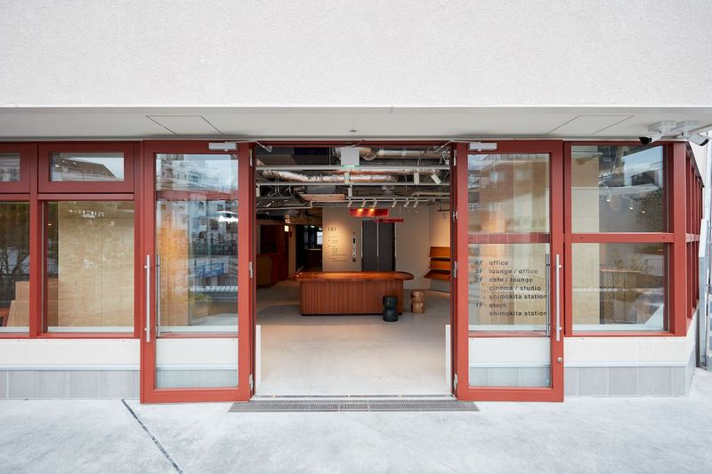
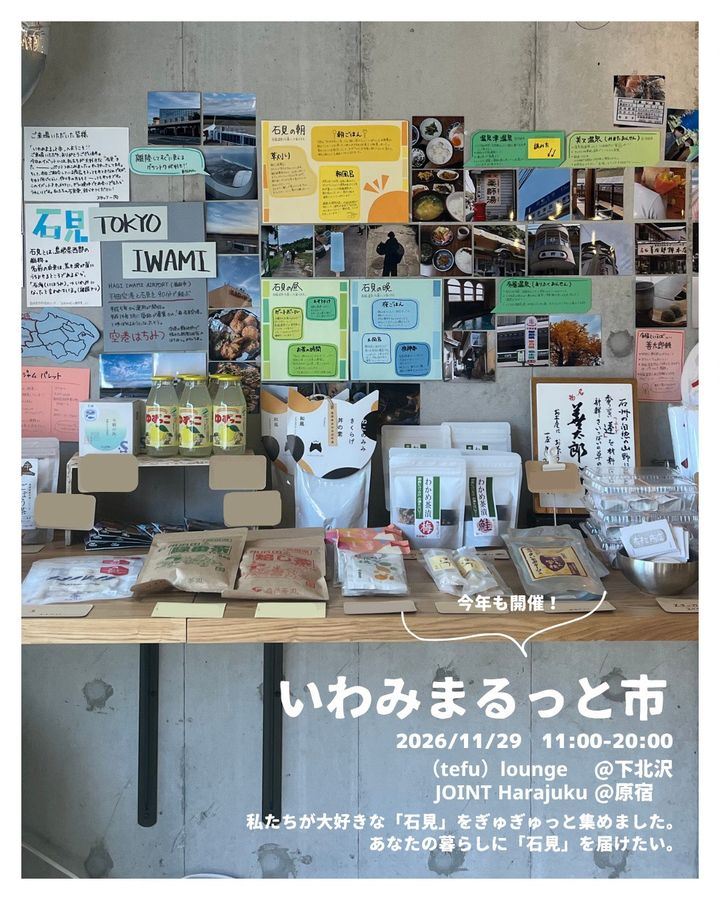
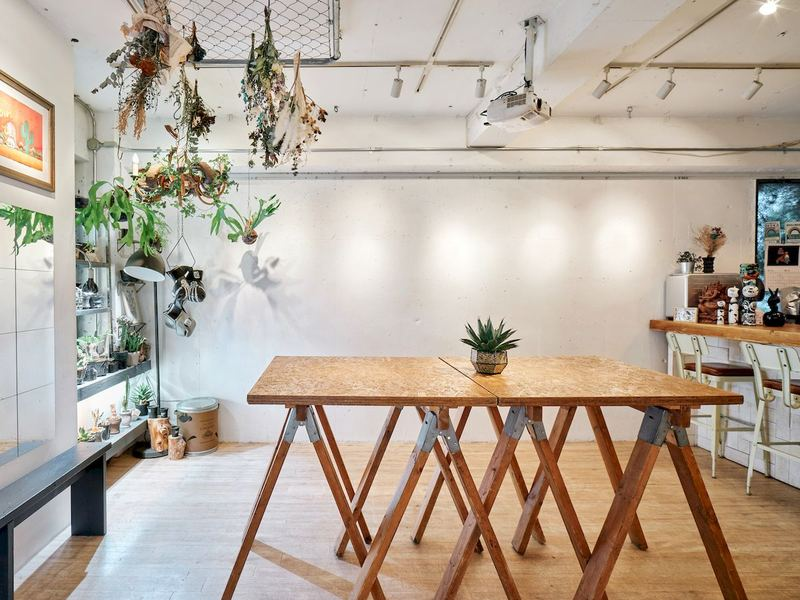
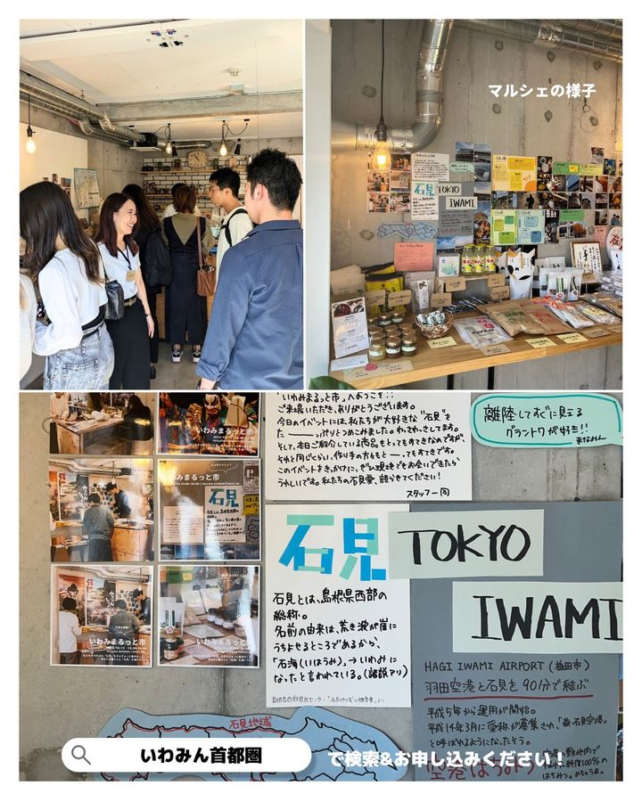
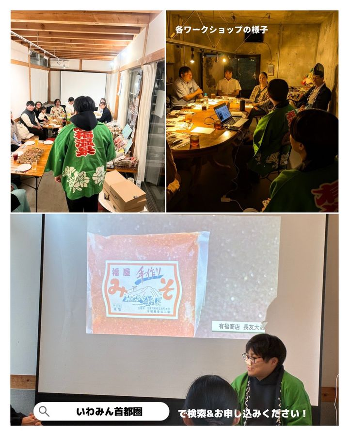

石見（いわみ）地方とは、島根県西部のこと。島根が大好きなメンバーがつくる「石見」を楽しむマルシェです。私たちが大好きな石見、私たちが暮らす石見を、東京で暮らす皆さまにもお届けします。
11時から19時まで出入り自由。石見神楽の衣装体験や、みそソムリエの味噌食べ比べなど、今年はワークショップも盛りだくさんです！

各企画のボタンから予約してください。「いわみん首都圏」で検索しても予約ページが見つかります。開始の10分前までに会場にお越しください。
会場ごとの1日の流れです。ブロックを押すと予約ページが開きます。スマホでは横にスクロールできます。
マルシェは下北沢、飲食のワークショップは原宿で開催します。どちらの会場も2階です。




有福商店（担当：長友） 受付 9:00〜18:00
070-9145-3207